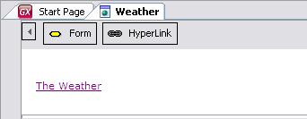
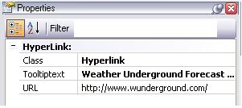

Hyperlink control
Hyperlink controls give the user the possibility of establishing links to pages other than the current one. They are usually used when the link is static. 
After you insert a hyperlink in the webform object, you can configure its properties by editing the control's properties window.  In our example, The Weather links to the weather forecast at www.wunderground.com. Once you have dragged & dropped the hyperlink into the webform, change the "Hyperlink" text to "The Weather" and write the URL in the URL property. See also
|
 To add a Hyperlink to the selected location, drag one from the toolbox Hyperlink icon and onto the webform. In the image you can see we inserted the following hyperlink: The Weather.
To add a Hyperlink to the selected location, drag one from the toolbox Hyperlink icon and onto the webform. In the image you can see we inserted the following hyperlink: The Weather.| Backlinks | |
| Category:Common Controls | Insert Hyperlink |
| Web Panel form |